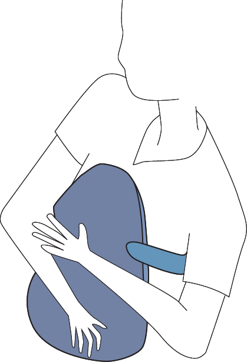
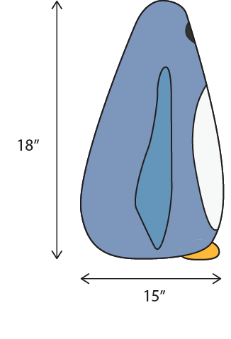
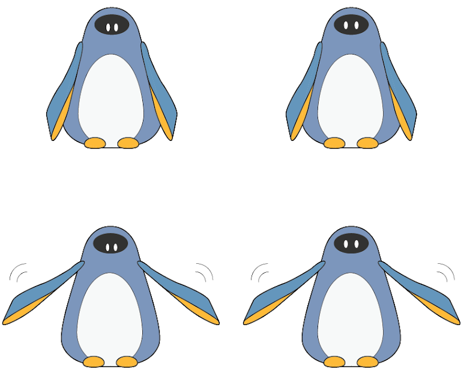
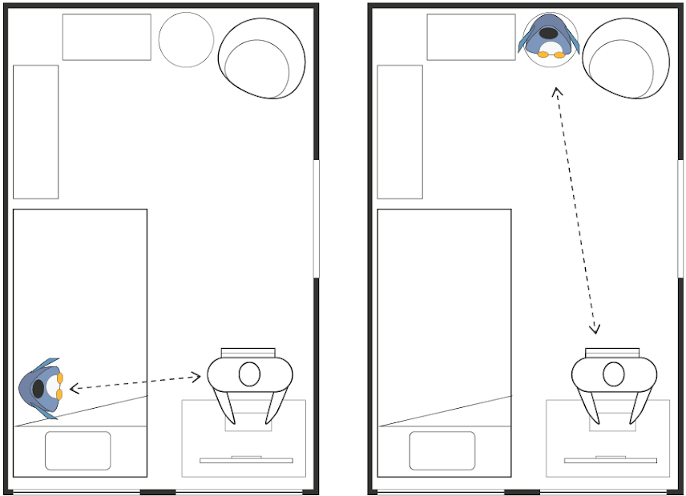
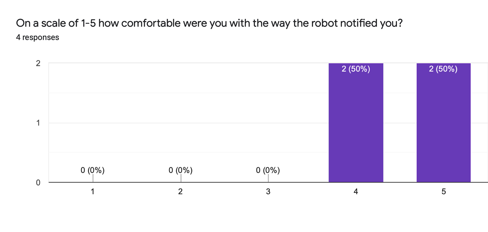
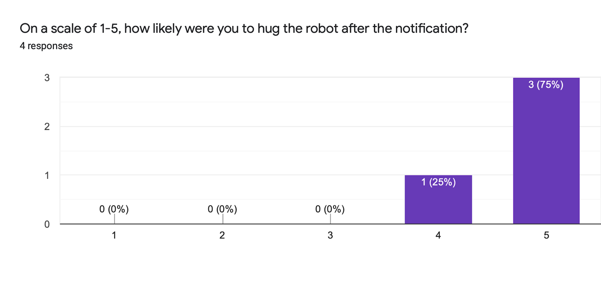
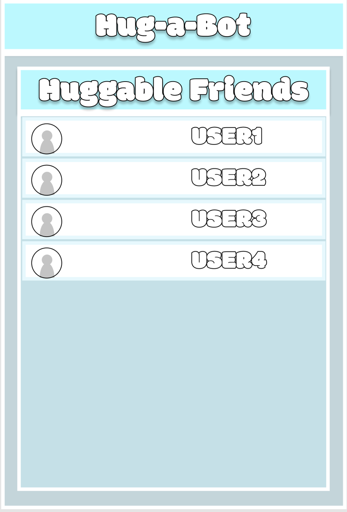
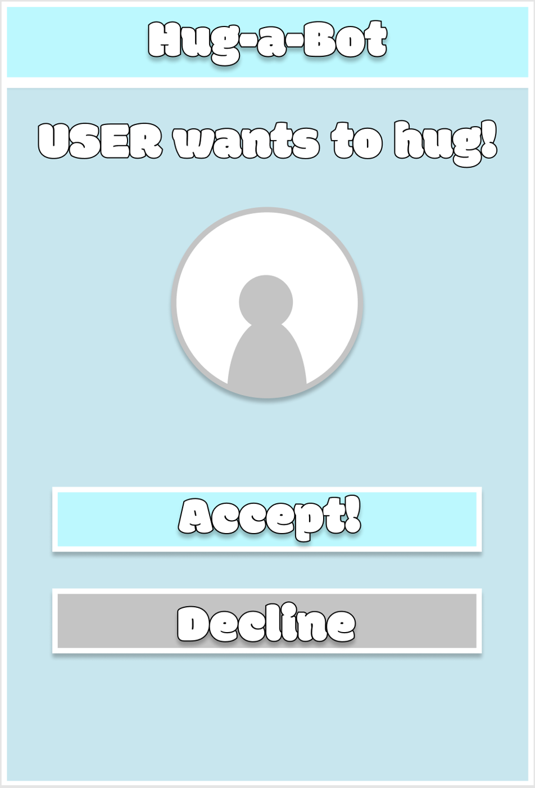

Overview
During the COVID-19 stay-at-home orders in spring 2020, many people went weeks without physical contact. Our team of five designed Hug-a-Bot, a socially assistive robot that gives hugs. It lets you send and receive hugs from loved ones through a companion app, and it can check your body temperature. The project grew out of an earlier replication study on human-robot proxemics, which looked at how a robot's eye gaze changes how close people are willing to get.
Design
Research shows animal-like robots are seen as more likable for social tasks, and they avoid the uncanny valley that human-like robots can fall into. We chose a penguin because its long fins make a natural hugging motion and its round body works as a soft cushion. The design has a screen and camera for a face, so it can make eye contact, and a heat-transmitting belly to make hugs feel warmer. For the prototype, we fit two 3D-printed arms driven by servos into a penguin plush so it could lift its fins to invite a hug.




Study design
We designed a between-subjects experiment with 50 participants to test how two nonverbal cues affect whether people respond to a hug request: mutual gaze and an open-arms gesture. Each participant would play a continuous task, the Chrome dinosaur game, in a room set up like a bedroom. After a while, their phone would show "You have received a hug!" and the robot would act out one of four conditions. We measured how quickly people hugged the robot, whether they hugged it at all, and survey ratings for comfort, noticeability and huggability. We planned to analyze the results with ANOVA and check the survey's consistency with Cronbach's alpha.

Pilot study
We ran a pilot on a couch with the plush prototype. Whenever the robot moved its arms, participants rated it higher on huggability and noticeability, and every rating below 5 came from a no-motion condition. Participants also found the robot friendlier when it faced them. The condition with no motion and no gaze scored lowest. One limitation was that the servos hummed the whole time, which made the robot more noticeable than intended.


Next steps
A companion app would sync the phone notification with the robot's motion, which was hard to time by text message in the pilot, and let users send hugs to each other. Future work would add heat sensing and warmth across the body, wireless pairing between robots, and quieter actuators.

